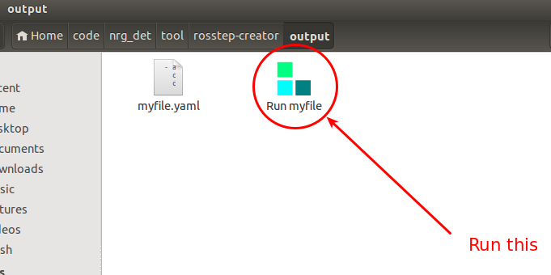

ROSSTEP 1.2 Documentation
Adam Allevato, allevato@utexas.edu
2015-07-31
Intro
Welcome to ROSSTEP! This page will teach you how to use ROSSTEP to create one-click ROS applications.
What ROSSTEP is
- A way of sequentially launching ros nodes, roslaunch files, and other ros-related processes
- A way of preventing ros processes from running until certain conditions are met
- A tool for creating one-click ROS applications
- A possible replacement for roslaunch when less flexibility is needed
- A YAML schema
- Awesome
What ROSSTEP is not
- A flow-control system
- Designed for Windows
- A replacement for the terminal
The ROSSTEP Creator GUI
You should create your ROSSTEP .yaml files using the GUI too, rosstep-creator. All functionality of ROSSTEP is accessible from this gui.
It is possible, but not recommended, to write the ROSSTEP YAML files by hand.
Below is a screenshot of the creator, with three steps already added.

- Action Chooser. Select what type of action you would like to perform. The options are:
- bash - any command that could be run in the terminal
- rosrun - a package name and node name
- roslaunch - a package name and launch file name
- none - no action. Used to make a condition-only step
- Action Text. The text to use when launching the action. For rosrun and roslaunch actions, do not include the text "rosrun" or "roslaunch."
- Required. After a required action has been started, ROSSTEP will kill all program execution if/when that process ends. This is useful for "framework" processes, such as camera data collectors or MoveIt.
- Temporary. This is almost the opposite of Required. When a Temporary step's conditions are met, the action will be forcibly ended. An example of when you may want to do this would be when you want to allow a continuous process to run until it is killed by user input.
- Condition Type. ROSSTEP will not advance to the next step until this condition is met. See the next field for more details.
- Condition Text. The text in this box helps define the condition, as follows:
| Condition Type | Condition Text |
| none | N/A |
| ROS topic | The name of the topic to listen for. The condition will wait until this topic exists on roscore (although this may not imply that messages are being actively published). A leading slash will be automatically added if missing. |
| ROS param | The name of the parameter to wait for. The condition will wait until this parameter exists on roscore. A leading slash will be automatically added if missing. |
| ROS service | The name of the service to wait for. The condition will wait until this service exists on roscore. A leading slash will be automatically added if missing. |
| seconds | How many seconds to wait. Decimal values are accepted. |
| completion | N/A - No text required. Wait for this step's action to complete. This will not work well with Required or Temporary, for obvious reasons. |
| user prompt | The message to display to the user, in a window with an OK button. When OK is pressed, the condition will complete. |
- Move Up Button. Move this step up the stack (towards the beginning of the rosstep program).
- Move Down Button. Move this step down the stack (towards the end of the rosstep program).
- Delete Button. Remove this step from the program.
Use the + button to add new steps to the program.
When you are finished, press the Build button and enter a filename. The creator will generate both a ROSSTEP .yaml file, and an Ubuntu .desktop file, allowing one-click running.
Running your ROSSTEP file
Important: if you move your .yaml file after saving it, you must edit the .desktop file to point to its new location. Moving the yaml file is not recommended. Save it in your package/project folder.
To run, simply double-click the ROSSTEP icon with your program's name.
